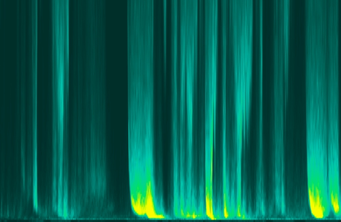

Date of composition: 2022
Duration: 7:06
Format: fixed medium sound (8ch)

Wave spectra used in Three Storms
Programme note: (download as PDF)
Three Storms
February 2022 saw a remarkable sequence of three named storms in the UK – Dudley, Eunice and Franklyn – which followed each other within the course of a single week. It was another of the increasingly frequent record-breaking weather events that point towards the dangers of climate change.
The musical foundation of Three Storms uses data from buoys located around the south west of England and North Wales, which sample the frequencies of ocean waves at different UK locations, every half hour. These wave motions have then been shifted up into the range of human hearing, making the ‘vibrations’ of UK coastal waters audible, and compressing a month of activity into seven minutes.
Wave data was supplied by the Channel Coastal Observatory (coastalmonitoring.org). I am grateful to Dr David Christie, Research Fellow in Ocean Renewable Energy Modelling in Bangor University’s School of Ocean Sciences, for his invaluable help in obtaining and understanding the data.